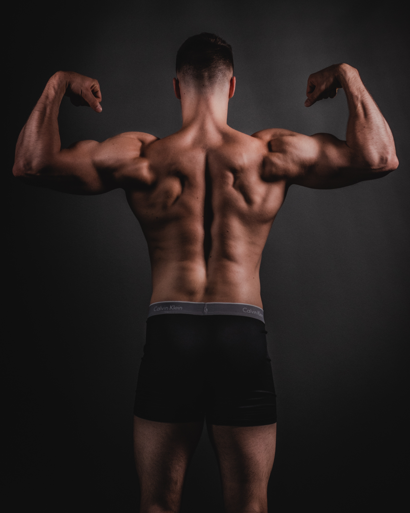
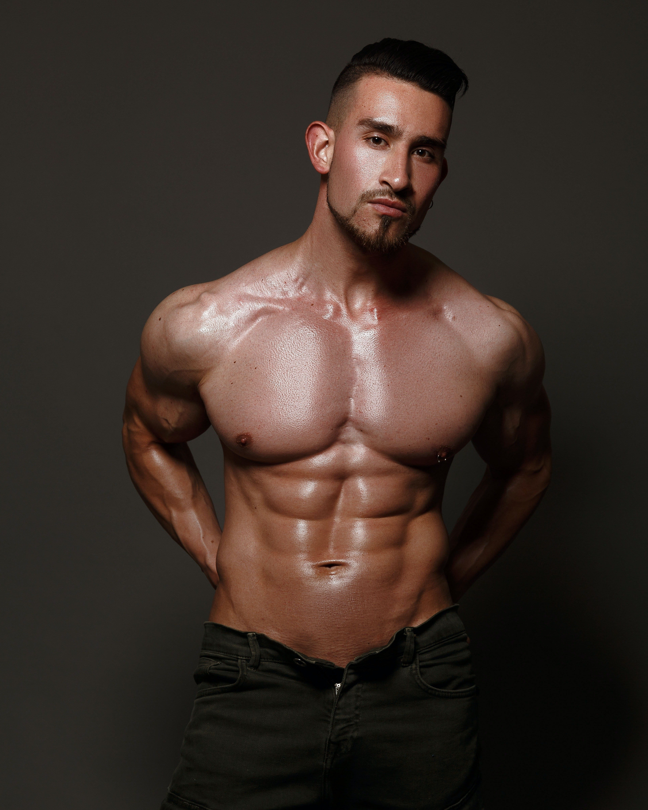

重量訓練
首頁標題的圖片
健身常聽到的重訓其實為重量訓練(Weight training)的簡稱，透過負重讓身體不同部位的骨骼肌產生力量對抗重力，讓肌肉得到刺激與鍛鍊。重訓不只是單一運動，而是一個全方位的運動科學。
針對不同的部位擁有不同的訓練動作，除了瘦身改善體態之外，對於體內也能提升肌耐力、肌力、爆發力...等功效！從重訓用來幫助訓練運動員、軍人，普及至今也逐漸變成我們日常運動的訓練方式之一。
各種健康和健身專家表示，重量訓練對每個人來說都是必不可少的，可以做為你計劃進行的任何鍛煉和健身計劃的重要組成。 重訓通常著重增強肌肉、撕裂肌肉和平坦腹部，但實際上它的作用遠不止於此。
為了改善你的外表和減肥你努力的運動，重訓＋有氧甚至加上高強度訓練，如果你已經達到目標，很恭喜，但要提醒別太過放鬆搞到打回原形，像是體豬反彈變身形和皮膚鬆鬆垮垮的泡芙人。
這種特殊類型的訓練，包括體重鍛煉、啞鈴、機器、壺鈴和其他設備，它還有助於防止你失去肌肉質量，並讓你執行日常任務更為容易，例如輕而易舉的將裝得滿滿滿的購物袋從車上抬到家中，或是在打掃時輕巧地舉起家裡的某件大家具。
一直持續不綴地鍛鍊，最終能把自己練成洛基，這是重訓作用的神話，不必想太多，一般人的生活或職場裡也不需要健美先生的存在，但至少你的肌肉質量可以獲得保證，這點絕對沒有爭議。
重量訓練的五個好處 快點開始動起來吧!
好處1.有效燃燒卡路里
據專家指稱，完全不運動的成年人每十年會損失大約 8% 的肌肉量，這意味著每天燃燒的卡路里數量也會大幅下降，更糟的是，同時這也會導致體重增加，即使你沒有吃更多的垃圾食品。
重量訓練對於燃燒足夠的卡路里至關重要，因為它可以逆轉肌肉損失並幫助你獲得肌肉，從而提高你的基礎代謝率並幫助你在沒多做什麼事的情況下全天燃燒更多的卡路里。
好處2.降低受傷的風險
這種類型的訓練有助於糾正你個人某些習慣性動作或姿勢可能存在的任何肌肉失衡，除了鍛煉你的活動力和力量外，尤其是有助於隨著年齡的增長而保持基本盤，避免受傷甚至跌倒。根據一項研究顯示，綜合性的重量訓練可以將受傷風險降低多達 66%，跌倒風險降低 34%。
好處3.有益心臟健康
心臟病和中風每年導致全世界數百萬人死亡。定期進行重量訓練有助於控制血壓、膽固醇和血糖，這讓你的心臟得以保持強壯和健康。
想要更準確的數字來振奮你動起來嗎？2019 年的一項研究甚至發現，通過定期進行至少一小時的重量訓練，可以將心臟病發作的風險降低 40~70%。美國心臟協會甚至建議你每周至少進行兩次重量訓練。
好處4.打造更強壯的骨骼
配合良好的飲食，這種訓練可以降低骨質疏鬆症和骨折的風險，這是因為當你這樣做時，骨骼會受到壓力，身體會有意識必須去修復它們，而當這種情況發生時，你的骨骼會變得更強壯和更有抵抗力。每週兩次30分鐘的重量運動，持續一段時間後足以看到良好的效果。
好處5.提升你的心理健康
保持活躍和鍛煉的另一個重要原因是維持你的心理健康。許多研究表明，運動對你的思想、情緒和認知能力有很多好處，同時也對你的自尊（練出好身材以及保持標準體重）和自信心（外表更挺拔及穿衣更有型）有作用。此外，一些研究表明，硬舉可以減輕壓力和焦慮，以及抑鬱症狀。
肌群介紹
肌群介紹標題的圖片

胸部肌群
胸部肌群主要是由胸大肌與胸小肌所組成。
胸肌的主要功能為肩部橫向內收（像飛鳥一樣將上臂穿過身體朝向中線），以及肩膊向前提高。
由於纖維的運行方式，向上傾斜或窄握的臥推角度針對更多的上胸肌。而當使用寛握卧推和平坦或下斜的板凳角度時，會使用更多的中、下胸肌。

背部肌群
背部肌群主要是由闊背肌、豎脊肌與斜方肌所組成。
背肌的主要角色在於支撐身體上半身及肩頸的運動，強健的背部肌肉群可以幫助我們維持比較好的身體姿勢，進而減少彎腰駝背或是背部及肩頸疼痛的問題。
肩部肌群
肩部肌群主要有三角肌以及斜方肌所構成。
肩膀肌肉所伴隨的是手臂運動與上身的活動；因為肩部關節的構造功能，原本就為了活動度與運用性，而呈現比較鬆弛以利運動的狀態。

核心肌群
核心肌群主要是由腹內斜肌、腹外斜肌以及腹直肌所構成。
核心是負責穩定好身體軀幹、動作姿勢的第一線。其實核心不是單純只有肚子區間的肌肉，較為正確的定義，凡是能穩定軀幹、負責保護脊椎提供脊椎足夠的支撐力的肌群，都稱之為核心肌群。
BMR計算
BMR計算標題的圖片
BMR基礎代謝率介紹
基礎代謝率 BMR（Basal Metabolic Rate）
基礎代謝的意思是身體為了要維持運作，在休息時消耗掉的熱量。
基礎代謝率佔了總熱量消耗的一大部分，大約65-75%左右。
會影響到基礎代謝率高低的有很多，像是總體重、肌肉量、賀爾蒙、年齡等。
簡單評估自己的基礎代謝率
性別 :
您的基礎代謝率 :
男性：基礎代謝率 = (10 × 公斤體重) + (6.25 × 公分身高) - (5 × 年齡歲數) + 5
女性：基礎代謝率 = (10 × 公斤體重) + (6.25 × 公分身高) - (5 × 年齡歲數) – 161
(根據Mifflin-St Jeor Equation公式計算)
TDEE計算
TDEE計算標題的圖片
TDEE總熱量消耗介紹
總熱量消耗 TDEE ( Total Daily Energy Expenditure )
身體一整天所消耗掉的熱量。
也可以理解為維持體重的熱量，
因為當攝取的卡路里 = TDEE，體重會維持不變。
總熱量消耗 = 基礎代謝＋運動消耗＋產熱消耗。
基礎代謝率 :
您的TDEE :
TDEE評估標準
| 活動量 | 活動量描述 | TDEE計算方法 |
|---|---|---|
| 久坐 | 沒啥運動 | TDEE = BMR x 1.2 |
| 輕度活動量 | 每周運動1-3天 | TDEE = BMR x 1.375 |
| 中度活動量 | 每周運動3-5天 | TDEE = BMR x 1.55 |
| 高度活動量 | 每周運動6-7天 | TDEE = BMR x 1.725 |
| 非常高度活動量 | 無時無刻都在運動 | TDEE = BMR x 1.9 |